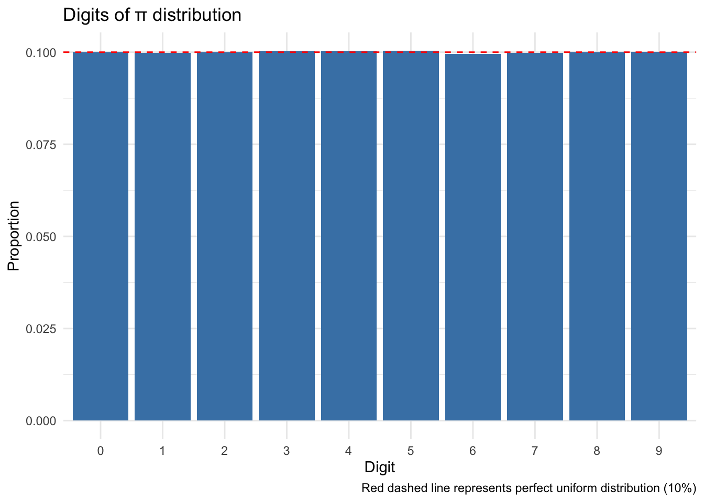
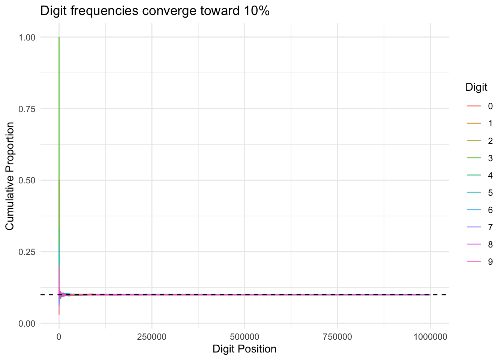
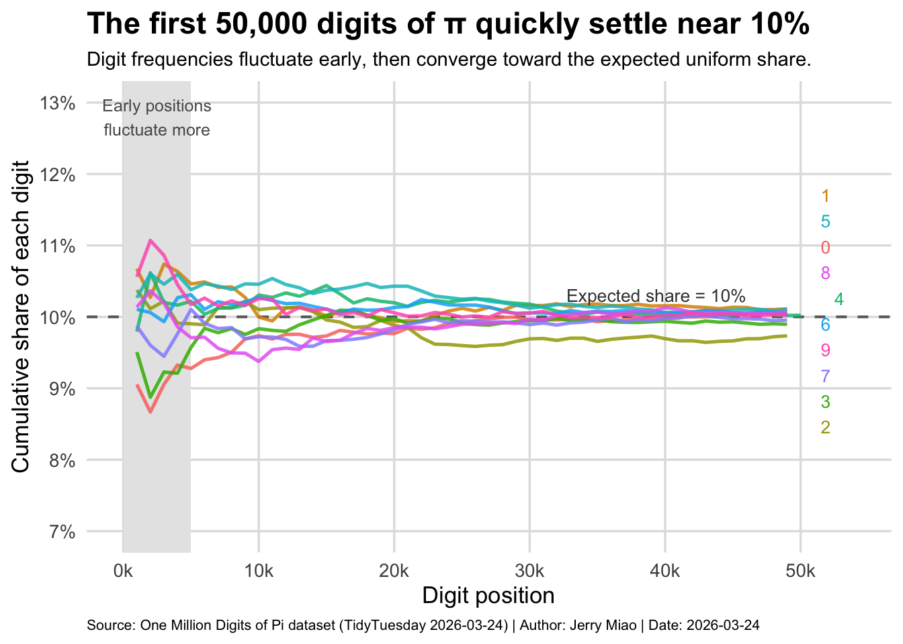

Homework 06 TidyTuesday (Pi Digits)
Dataset Import From TidyTuesday
Research Question
Are the digits of π evenly distributed across 0–9, and does the distribution become more uniform as we include more digits?
Data Exploration
Rows: 1,000,001
Columns: 2
$ digit_position <dbl> 1, 2, 3, 4, 5, 6, 7, 8, 9, 10, 11, 12, 13, 14, 15, 16, …
$ digit <dbl> 3, 1, 4, 1, 5, 9, 2, 6, 5, 3, 5, 8, 9, 7, 9, 3, 2, 3, 8…# A tibble: 10 × 3
digit n prop
<dbl> <int> <dbl>
1 0 99959 0.1000
2 1 99758 0.0998
3 2 100026 0.100
4 3 100230 0.100
5 4 100230 0.100
6 5 100359 0.100
7 6 99548 0.0995
8 7 99800 0.0998
9 8 99985 0.1000
10 9 100106 0.100 Visualizations
Visualization 1: Overall Digit Distribution
Code
ggplot(digit_freq, aes(x = factor(digit), y = prop)) +
geom_col(fill = "steelblue") +
geom_hline(yintercept = 0.1, linetype = "dashed", color = "red") +
labs(
title = "Digits of π distribution",
x = "Digit",
y = "Proportion",
caption = "Red dashed line represents perfect uniform distribution (10%)"
) +
theme_minimal()
All digits appear with roughly equal proportions near 10%, suggesting that π’s digits are uniformly distributed.
Visualization 2: Does Distribution Stabilize Over Time?
Code
pi_cumulative <- pi_digits %>%
mutate(index = row_number()) %>%
group_by(digit) %>%
mutate(cum_count = row_number()) %>%
ungroup() %>%
group_by(digit) %>%
mutate(cum_prop = cum_count / index) %>%
ungroup()
ggplot(pi_cumulative, aes(x = index, y = cum_prop, color = factor(digit))) +
geom_line(alpha = 0.7) +
geom_hline(yintercept = 0.1, linetype = "dashed") +
labs(
title = "Digit frequencies converge toward 10%",
x = "Digit Position",
y = "Cumulative Proportion",
color = "Digit"
) +
theme_minimal()
Although proportions fluctuate early, they quickly stabilize near 10%, demonstrating convergence toward a uniform distribution.
Visualization 3: Runs of Repeated Digits
Code
pi_cumulative_clean <- pi_digits %>%
mutate(
index = digit_position,
digit = factor(digit)
) %>%
group_by(digit) %>%
mutate(cum_count = row_number()) %>%
ungroup() %>%
mutate(cum_prop = cum_count / index) %>%
filter(index >= 1000, index <= 50000) %>%
mutate(index_bin = floor(index / 1000) * 1000) %>%
group_by(digit, index_bin) %>%
summarize(cum_prop = last(cum_prop), .groups = "drop")
pi_end_labels <- pi_cumulative_clean %>%
group_by(digit) %>%
filter(index_bin == max(index_bin)) %>%
ungroup()Code
library(ggrepel)
library(scales)
pi_end_labels <- pi_cumulative_clean %>%
group_by(digit) %>%
filter(index_bin == max(index_bin)) %>%
ungroup()
ggplot(pi_cumulative_clean, aes(x = index_bin, y = cum_prop, color = digit)) +
geom_hline(
yintercept = 0.10,
linetype = "dashed",
linewidth = 0.7,
color = "gray40"
) +
geom_rect(
aes(xmin = 0, xmax = 5000, ymin = -Inf, ymax = Inf),
inherit.aes = FALSE,
fill = "gray90",
alpha = 0.35
) +
geom_line(linewidth = 0.9, alpha = 0.85) +
geom_text_repel(
data = pi_end_labels,
aes(label = digit),
nudge_x = 2500,
direction = "y",
hjust = 0,
segment.color = NA,
size = 3.5,
show.legend = FALSE
) +
annotate(
"text",
x = 46000,
y = 0.103,
label = "Expected share = 10%",
size = 3.5,
color = "gray25",
hjust = 1
) +
annotate(
"text",
x = 2500,
y = 0.128,
label = "Early positions\nfluctuate more",
size = 3.3,
color = "gray35"
) +
scale_x_continuous(
labels = scales::number_format(scale = 1 / 1000, suffix = "k"),
breaks = seq(0, 50000, 10000),
limits = c(0, 54000)
) +
scale_y_continuous(
labels = scales::percent_format(accuracy = 1),
limits = c(0.07, 0.13),
breaks = seq(0.07, 0.13, 0.01)
) +
labs(
title = "The first 50,000 digits of π quickly settle near 10%",
subtitle = "Digit frequencies fluctuate early, then converge toward the expected uniform share.",
x = "Digit position",
y = "Cumulative share of each digit",
caption = "Source: One Million Digits of Pi dataset (TidyTuesday 2026-03-24) | Author: Jerry Miao | Date: 2026-03-24"
) +
theme_minimal(base_size = 13) +
theme(
legend.position = "none",
plot.title = element_text(face = "bold", size = 17),
plot.subtitle = element_text(size = 11),
plot.caption = element_text(size = 8, hjust = 0),
panel.grid.minor = element_blank(),
panel.grid.major = element_line(color = "gray88")
)
Conclusion
Although the distribution of digits in π appears uneven at the beginning, this is largely due to small sample size effects. As more digits are observed, the proportions of each digit quickly stabilize around 10%. This pattern demonstrates a clear convergence toward a uniform distribution, suggesting that the digits of π behave like a random sequence in the long run. Overall, the visualization highlights how apparent randomness emerges as the dataset grows.